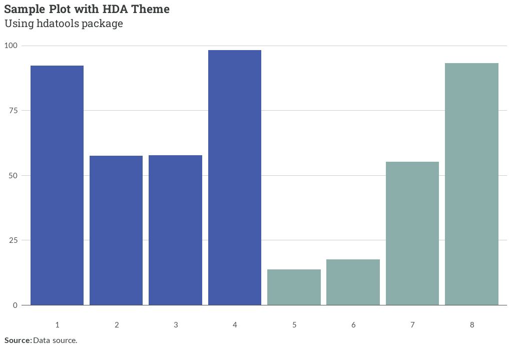

The hdatools package provides a set of functions and tools for data analysis and visualization.
# install.packages("devtools")
devtools::install_github("hdadvisors/hdatools")theme_hda(): HDAdvisors-branded ggplot2 themetheme_hfv(): HousingForward Virginia-branded ggplot2 themetheme_pha(): PHA-branded ggplot2 themescale_color_hda(), scale_fill_hda(): HDA-branded discrete color scalesscale_color_hfv(), scale_fill_hfv(): HFV-branded discrete color scalesscale_color_pha(), scale_fill_pha(): PHA-branded discrete color scalesscale_color_gradient_hda(): HDA-branded continuous color scalescale_color_gradient_pha(), scale_fill_gradient_pha(): PHA-branded continuous color scalesadd_reliability(): Add reliability labels based on coefficient of variationfct_case_when(): Create a factor with case_when logic and automatic level orderingmarkdown_wrap_gen(): Generate a function to wrap and format facet labels with markdownadd_zero_line(): Add darker line to zero interceptpublish_plot(): Create dynamic graphic from plot object when document rendered as HTMLBasic example:
library(hdatools)
library(tidyverse)
# Create a sample dataset
data <- data.frame(
x = as.character(c(1:8)),
y = runif(8, 0, 100),
group = rep(c("A", "B"), each = 4)
)
# Create a plot with HDA theme and colors
ggplot(data, aes(x, y, fill = group)) +
geom_col(position = "dodge") +
scale_fill_hda() +
add_zero_line() +
theme_hda() +
labs(title = "Sample Plot with HDA Theme",
subtitle = "Using *hdatools* package",
caption = "**Source:** Data source.")
# Add reliability labels to a dataset
data_with_reliability <- data |>
mutate(cv = runif(10, 0, 0.5)) |>
add_reliability()
# Create a factor with custom ordering
data_with_factor <- data |>
mutate(factor_col = fct_case_when(
x < 3 ~ "Low",
x < 7 ~ "Medium",
TRUE ~ "High"
))